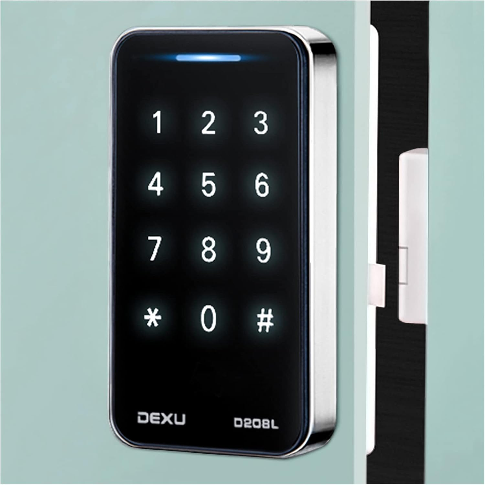

電子錠のパスワードを解読する | オリジナル、AI翻訳
 Source: Amazon
2019年の夏、北京に住んでいた時、リチャード・ファインマンの『きっと冗談でしょう、ミスター・ファインマン!』という本を読みました。その本では、彼は他人のロッカーのパスワードを推測して開錠する体験談を共有していました。詳細は覚えていませんが、強い印象を受けました。
ふと、自宅の電子ロックを見に行きました。上の画像にあるようなタイプのものです。近づいて調べると、埃が見えました。私はパスワード369258を使っていて、その部分は比較的きれいだったのに対し、147の部分には埃が付いていました。本当に面白いですね。私は自宅を自貸で借りていて、月4800元ほどで、通州に住んでいました。そのため、自貸物件に設置されている電子ロックは上記のような製品です。
この経験に少し興奮しました。少し大胆になりました。当時、私は自宅でスタートアップを立ち上げていたので、他の人と違ってオフィスに行く必要がありませんでした。昼間、隣人はおそらく仕事に行っているだろうと思いました。
さらに重要なのは、キーパッドの埃の分布を見ても、6桁の数字が分かっても、組み合わせはたくさんあります。おそらく私のハッキングの方法は通用しないだろうと思いましたが、それでも試してみようと思いました。
私は自宅の真下にある家に行き、作業を始めました。ああ、埃の分布がとても明確でした。123690の部分はきれいで、4578の部分には埃が付いていました。試してみると、突然開く音が聞こえました。私は好奇心と興奮、そして少しの恐怖を感じました。何とか家に入って中を見て、すぐに出ようと思いました。
しかし、その時、女の子がバスルームにいました。彼女は少し声を出して、「誰？」と言いました。私は説明せずにドアを閉めて、すぐに自宅に戻りました。
1分後、私は落ち着かず、そのままにしておけませんでした。再び下の家に行き、ドアを閉めて大きな声で説明しました。私は電子ロックのハッキングについての本を読んだだけで、ただ好奇心があっただけだと言い、上の階に住んでいると伝えました。
彼女は了解したと言いました。その夜、彼女は兄と他の親戚と一緒に私の家に来て、なぜそんなことをしたのかなどと尋ねました。私は再び説明しました。私の妻もその夜仕事から帰ってきました。妻も説明を手伝いましたが、彼らは満足せず、警察を呼びました。
私は妻に別れを告げ、彼らと一緒に警察署に行きました。その後、口頭の供述記録を残し、彼らに謝罪しました。2、3時間後、警察は私を帰宅させました。
Insta360の創業者は、タイピングの音を聞いて360の有名な創業者の携帯番号をハッキングしたことがあります。ハッキングの話はたくさんあります。
自分でハッキングをすることになるとは思いませんでした。少し面倒なことになりましたが、エンジニアとして、それをやり遂げたことに幸せを感じます。しかし、振り返ると、私の行動は無謀で侵入的でした。好奇心から他人の家に無断で入ろうとしたことは、一線を越えていました。女の子を怖がらせ、彼女の家族に不安を与えたことを後悔しています。改善するためには、好奇心を倫理的に活かすべきでした。例えば、不具合を大家やセキュリティ専門家と話し合うべきでした。今後は、他人のプライバシーを尊重し、法的で建設的な方法でアイデアを探求することを優先します。
最近では、電子ロックに改善が加えられています。キーパッドにカメラが付いているタイプや、開錠記録があるタイプもあります。また、最近では、家に監視カメラを設置している人もいます。
この話を共有することで、社会が不安定になるでしょうか？ 私は偶然それを発見しました。これは、このような製品のバグのようなものです。おそらく、このハッキング方法を知っている人は少数です。少数の人だけがこのハッキング方法を知っているよりも、多くの人に知ってもらった方が、このようなハッキングを防ぐことができます。責任を持って共有することで、キーパッドの埃のパターンのような単純な脆弱性についての認識を高め、定期的な清掃やランダムな入力方法の使用など、より良いセキュリティ対策を促進することができます。